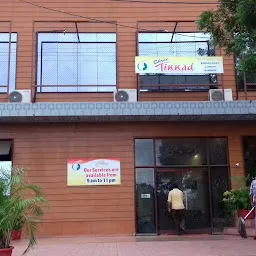
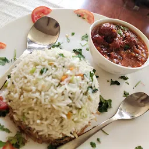
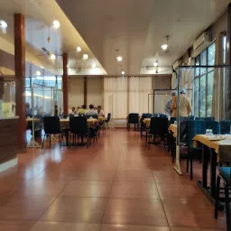
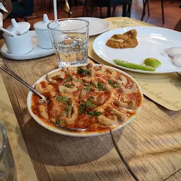

Tikkad Restaurant is a vegetarian restaurant, buffet restaurant and fast food restaurant located in Khandwa, Madhya Pradesh. The average rating of this place is 4.30 out of 5 stars based on 2816 reviews. The street address of this place is Main Road, HO, near Poonamchand Gupta Vocational College, Civil Line, Khandwa, Madhya Pradesh 450001, India. It is about 0.52 kilometers away from the Khandwa Junction railway station.
Be ready to get a feel of luxury in a limited budget. You have touch free hand wash dispenser, taps and hand dryer on the entry. As you enter : The place is fully air conditioned and you will fall in love with the dinning aura and ambience. The service is fast and the menu pocket friendly (200-250/person). I had Paneer takatak, Kaju curry and dal jeera rice. I would give a 7/10 rating to the food. And 10/10 to quick service. In the evening it gets insanely busy with wait time over 1 hour. The place is not sufficiently staffed. Overall I recommend this place for once in a month fine dinning plan.
   Vegetarian cuisine is to the pleasure of all clients here. The hallmark of this restaurant is serving nicely cooked paneer. Many visitors note that the staff is cool at this place. Prompt service is something guests appreciate here. Prices are adequate for the quality you get. Tikkad Restaurant with the charming atmosphere can be a good dining place on your route. Google users awarded this place.Nestled within the heart of Cody, Wyoming, where the majestic Rocky Mountains meet the endless stretch of open plains, lies a hidden gem of conviviality and charm – the Blanca Tatanka Bar and Grill. Step inside, and you’ll be transported to a realm where handcrafted cocktails, soul-stirring live music, and an enchanting atmosphere converge to create an unforgettable experience.
Tikkad Restaurant is a vegetarian restaurant, buffet restaurant and fast food restaurant located in Khandwa, Madhya Pradesh. The average rating of this place is 4.30 out of 5 stars based on 2816 reviews. The street address of this place is Main Road, HO, near Poonamchand Gupta Vocational College, Civil Line, Khandwa, Madhya Pradesh 450001, India. It is about 0.52 kilometers away from the Khandwa Junction railway station.